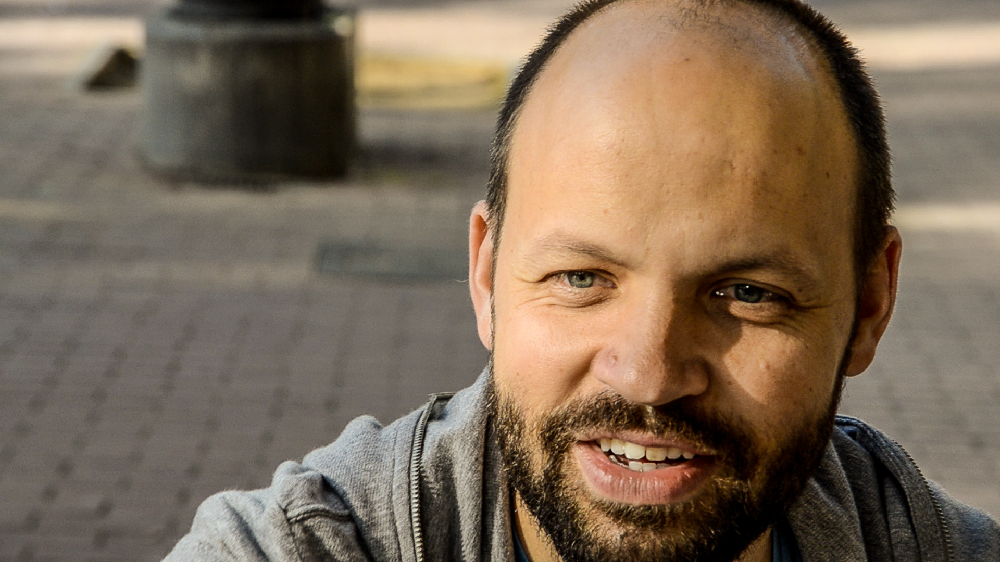
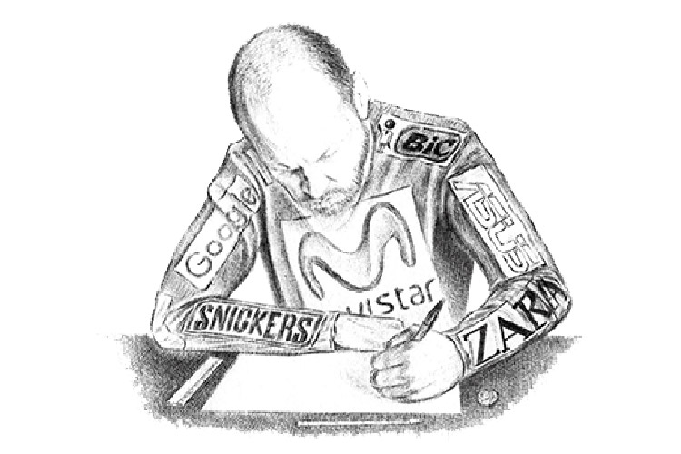

Miguel Noguera tiene 36 años. Es artista, actor y dibujante, pese a que se le incluye bajo la etiqueta de humor. Vive en Barcelona. Estudió Bellas Artes y trabajó de camarero, donde conoció a su novia hace 10 años. Se siente a gusto con un grupo minoritario de seguidores e indiferente con los detractores. El crítico de arte Jordi Costa le consideró “el Ferrán Adrià de la risa”. Compartimos café, charlas y el seguimiento desde el camerino hasta el final de su función: el Ultrashow.
Puedes acercarte a Miguel Noguera con admiración, con franca indiferencia o con la idea de verlo cruzar el umbral que separa nuestro mundo, que percibimos todos, de la dimensión Noguera. Yo me acerqué para verle cruzar ese umbral y con la firme intención de saber por qué tituló su último libro Mejor que vivir. Era una paradoja sin solución: un refugio de la vida para vivirla con plenitud. Así me acerqué a Miguel Noguera, como quien busca al sabio para preguntarle por la felicidad, por ese refugio existencial envidiable.
Investigué los títulos de los otros libros antes de entrevistar a Miguel Noguera y de convertirme en su sombra. Quise acercarme para saber sobre el Ultrashow, su espectáculo, pero cuanto más investigaba mejor quise conocer la dimensión que habita Noguera pegada a la nuestra.
Los libros de Noguera descolocan a los libreros porque no saben dónde ponerlos: Hervir un oso (que publicó junto con Jonathan Millán), Utraviolencia y Ser madre hoy.
Me acerqué a los libros de Miguel Noguera en distintos tiempos. El primero me lo dejó un amigo: “te vas a mear”, me dijo. Pues sí. El segundo lo fui a comprar. El librero tardó 10 minutos en dar con él: “¿Qué quiere decir ‘Utraviolencia’?”, me preguntó el pobre, como si lo supiera. Lo dijo mosqueado, supongo que por tardar tanto. Le dije sonriendo que imaginaba que si había un lugar más allá de la vida podría haber también otro más allá de la violencia. Lo dije sin pensar. Murmuró algo en voz baja y entonces deduje que por cada librero irritado habría un lector sonriendo.
—Busco Ser madre hoy.
—¿Ah sí? —dijo el joven, quizá dudando si felicitarme. Cayó enseguida—: Estará en maternidad.
—Pues ni idea —mentí. Vi en internet que Blackie Books lo definió como “el libro cuyo título menos tiene que ver con su contenido”. Esta vez tardaron más de 10 minutos. El joven lo encontró en Psicología, pero tras ojearlo me advirtió que podría no serme útil. Le agradecí el esfuerzo y me fui pensando que Miguel Noguera plantea juegos a sus lectores antes de comprar los libros.
Supuse que Mejor que vivir era un delirio de Miguel Noguera para despistar a los libreros, además de un riesgo comercial. Pero en Mejor que vivir Miguel menciona esa dimensión donde penetra a diario, con más o menos intensidad, buscando refugio, confort e inspiración. Decidí acercarme a Noguera para verlo cruzar el umbral y traer pruebas para contarlo en un reportaje.
En Mejor que vivir Noguera explica cómo surgió ese título. Al parecer, Miguel tradujo mal Better than live, el eslogan de un pub futbolero que queriendo expresar “mejor que en directo” a Noguera le pareció un mensaje existencial: “mejor que vivir”. Reivindicaba ese espacio y se preguntó por ese territorio “exterior a la vida, aunque accesible desde la vida misma”. “¿Qué es este vitalismo que se aniquila a sí mismo? ¿Qué hay en la vida mejor que vivir?”, se preguntaba.
Sólo relacioné el libro de Miguel Noguera y su forma de vida cuando me convertí en su sombra para este reportaje.
En 20 minutos Noguera entraba a escena. Allí, en el camerino, vi el proceso completo que le llevaba desde donde yo estaba hasta donde se refugia, pon que donde se divierte, aunque entonces no supe decir con qué creó Miguel el umbral para cruzarlo. Creo que la realidad se onduló, como cuando una carretera desprende calor, pero no estoy seguro porque mientras Miguel Noguera afinara su voz yo no podría fijarme en los detalles. Como además se puso a dar puñetazos al aire igual que los boxeadores calientan antes de pelear, y como no sabía si estaba ahuyentando su umbral para defenderlo ante incursiones ajenas, me oí preguntarle:
Miguel se refería a los puñetazos y cantos que lanzaba para concentrarse, pero en ese momento no pude saber si se refería al umbral que yo buscaba. Noguera alternaba cruces entre mi realidad y su dimensión. Lo sé porque compartimos esa realidad varias veces y otras no. En territorio compartido Noguera me pidió por ejemplo que le ayudara a colocarse el micro bajo la camiseta. Aproveché para ver qué imagen devolvía el espejo y comprobé que los músculos de su cara se tensaban cuando compartíamos realidad, mientras pasábamos el micro por su espalda, y se le destensaban cuando cruzaba hacia su dimensión. También podrían haber sido los roces. Lo cierto es que Miguel Noguera alternaba tensión y paz en tiempos brevísimos. Me guió por el territorio compartido del camerino mostrándome los detalles olvidados de otros artistas, como quien señala fotografías en su casa sin desmenuzar el pasado. “Ahora vengo”, dice de pronto, “voy al baño”. Mientras tanto, certifico que el camerino sigue siendo real. Como respiro una atmósfera de transición, compruebo un par de veces si estoy en la dimensión acostumbrada palpando el aire que se había ondulado con el dedo índice.
En cualquier caso, no pude seguir pensándolo porque el técnico del teatro Villarroel gritó a Miguel, desde algún lugar, que cuando quisiera, que el público ya estaba.
Camino del escenario, siguiendo al técnico por un pasillo estrecho y oscuro, Miguel Noguera agita los brazos como lo haría un escalador para descargar su fatiga, expulsa bocanadas de aire como un boxeador sin capucha y alterna sonrisas a su sombra (a mí) y seriedades al suelo, aunque es posible que Noguera no mirara ni una cosa ni otra. Lo que sí percibimos los dos fue el murmullo del público acercándose.
—Que vaya bien —le suelto. Se lo suelto con sensación de orgullo, como si fuera su padre, seguramente porque he quedado atrapado en el umbral entre dos dimensiones.
—Vamos allá —murmura—.¡Nos vemos luego!
Entre Noguera y yo se ha puesto el técnico, así que el pobre corta su comunicación por walkie y le contesta desconcertado a Miguel que sí, que luego se ven. Al mismo tiempo, otro técnico del teatro anuncia por megafonía que sean bienvenidos al espectáculo, así que el equívoco le pilla al traspié. No sé si el público se impacienta porque desconozco si ha pasado dos minuto o media hora. Imagino que dos minutos.
—¡No! Se lo decía a él, que está detrás —explica Noguera al técnico—. Ha habido una confusión y…
Trató de explicar lo sucedido en los bordes de la realidad, pero por megafonía le reclamaban y, tras despedirse con gesto risueño y con la mano, me dice que vaya bien, como si actuara yo, y penetra en la oscuridad al otro lado de la cual está el escenario. Ha cruzado el umbral por completo, por poco, porque un quiebro de la realidad casi le detiene, aunque ya está imbuido en su patio porque escucho los aplausos. Desde la butaca aprecio en Miguel Noguera movimientos de autómata que no había visto todavía.
“Puede que la voz pertenezca a su dimensión y el cuerpo a la nuestra. ¿No ha cruzado entero?”, apunto en mi libreta.
Ya había asistido al Ultrashow. Vi por primera vez a Miguel Noguera sobre el escenario comentando ideas descabelladas apuntadas en un papel solitario. Parecía el ensayo general. Miguel Noguera cambiaba los ritmos y los tonos en su exposición: a veces era periodista, otras predicador y otras veces, menos, un tenor que cantaba las peripecias de un gato, capitán de barco de guerra, que soñaba con usar un iPad sin arañarlo. Por entonces no estaba publicado Mejor que vivir y yo no imaginaba nada sobre umbrales ni refugios en Miguel Noguera. Si lo hice, fueron intuiciones sobre la palabra “oásis” que Noguera repitió varias veces en el Ultrashow.
Aquel hombre que cruzó el umbral delante de mí nació en Gran Canaria en 1979, aunque a los tres años se fue a vivir con su madre a Mallorca, de manera que desde pequeño ya se trasladaba desde un lugar flotante a otro. Con él son siete hermanos del mismo padre, pero con tres madres diferentes. El padre de Miguel Noguera tuvo cuatro hijos con su primera mujer, uno (él) con la segunda y dos más con la tercera. “Mi madre es sueca”, me había comentado, “y voy al club escandinavo a aprender sueco desde hace seis años”. Yo deduje que por eso sería que tiene los ojos azules y ese cráneo tan vikingo.
Lleva desde los 18 en Barcelona. Llegó para estudiar Bellas Artes. Tuve ocasión de preguntarle por qué lo eligió:
—La forma de concebirme a mí mismo en el mundo tiene que ver con la actividad artística más que nada.
Es la forma de diferenciarme de la nada. Y eso se solidificó en Bellas Artes —dijo.
Ahora, con casi 35 años, va a clases de canto, practica en un coro, estudia sueco y vive de sus creaciones desde 2010, así que imagino que hasta que consiguió ganarse el pan como artista su vida debió transcurrir entre la libertad creadora y la coacción del hambre, es decir, trabajando de cualquier cosa y quizás sufriendo el arte en una oficina como Kavafis. Entre 2002 y 2010, Miguel Noguera fue camarero, teleoperador, profesor de plástica durante mes y medio y coincidió con Jonathan Millán (Hervir un oso) y Joan Cornellà en la Moderna Escuela Mediterránea, empresa de retratos. “Tuve trabajos de persona que tiene la carrera de Bellas Artes”, me dijo semanas atrás. También hizo un curso de clown y le queda una culpa diaria por ganar más en una noche de show que en un mes de camarero.
Miguel Noguera sopesó llevar una vida de manual opositando para auxiliar administrativo, una imagen que choca contra el personaje delirante que actúa. La idea duró una tarde, cuando fue a la academia preparatoria a informarse y a la que no volvió.
Ahora, frente a nosotros y para acabar el Ultrashow, Noguera traía la foto de una mierda callejera. No precisó si abrió su umbral con el olfato o con la vista, pero lo cierto es que nos trajo una mirada desacostumbrada sobre una cagada de perro. La estética y los detalles formales cubren la dimensión Noguera igual que la idea pura de Belleza cubre el mundo platónico.
Esperé a Miguel Noguera a la salida junto con sus admiradores. Consideré que sólo yo sabía cuál era ese espacio mejor para vivir que construye para él y para nosotros.
—Gracias por todo, Miguel.
—De nada, hombre. Ya me dirás —dice—. ¡Adiós!
Caminé hacia casa, pensando en revisitar el vídeo esclarecedor, pensando en lo que cabría en el reportaje fiel sobre Miguel Noguera y con la duda de si al despedirse me habría dado la mano desde su dimensión porque creí ver que la realidad se ondulaba otra vez alrededor de nuestras manos, como cuando el asfalto despide demasiado calor, en el momento preciso de estrecharlas.